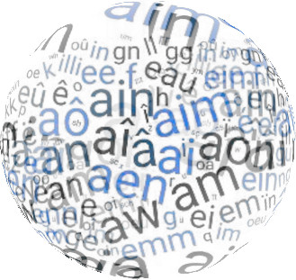

Manulex_Infra and Manulex_Morpho are two databases describing the orthographic, grapho-phonological, and morphological characteristics of written vocabulary in French elementary books and school textbooks (Peereman, Lété, & Sprenger-Charolles, 2007; Peereman, Sprenger-Charolles, & Messaoud-Galusi, 2013). Both of these databases were created to assist researchers and educators in designing literacy programs and conducting empirical studies. The newest versions of the databases can be downloaded from this site.
The objective of Manulex_infra is to provide quantitative
estimates of infra-lexical (syllables, grapheme-phoneme relations,
bigrams...), and lexical (lexical neighborhood, homophony, homography)
variables. The analyses are based on the Manulex
corpus (Lété, Sprenger-Charolles, & Colé, 2004) of
about 49,000 words (44.000 orthographic forms) from 54 textbooks used in
elementary schools in France. Manulex_morpho, which partly
relies on the Manulex_infra corpus, takes into account the
morphological structure of words by coding the morpho-phonograms of the
grapho-phonemic level. The database allows to analyse nominal gender,
nominal number inflections, some verbal marks (e.g., 'er', 'ont', 'ais')
as well as silent derivational and/or inflectional supports at the end
of words ('d' of 'grand') which are pronounced in inflected
and/or derived forms of a word ('grande', 'grandeur'). .
Compared to previous versions, the new versions of Manulex_infra
and Manulex_morpho (v.2, dec. 2021) incorporate major changes.
The Eqol_infra database was recently developed based on a corpus of 14,800 orthographic forms occurring in textbooks and children's literature from Quebec (Stanké et al., 2019). The analysis of word characteristics is similar to that of Manulex_infra.
References
• Lété, B., Sprenger-Charolles, L., & Colé, P. (2004). Manulex: A
grade-level lexical database from French elementary-school readers. Behavior
Research Methods, Instruments, & Computers, 36, 156-166. doi.org/10.3758/BF03195560
• Peereman, R., Sprenger-Charolles, L., & Messaoud-Galusi, S.
(2013). The contribution of morphology to the consistency of
spelling-to-sound relations: A quantitative analysis based on French
elementary school readers. Annee Psychologique, 113,
3-33.
doi.org/10.4074/S0003503313001012 - - [PDF]
• Peereman, R., Lété, B., & Sprenger-Charolles, L. (2007).
Manulex-Infra: Distributional characteristics of grapheme-phoneme
mappings, infra-lexical and lexical units in child-directed written
material. Behavior Research Methods, 39, 579-589. doi.org/10.3758/BF03193029 - - [PDF]
• Stanké, B., Le Mené, M., Rezzonico, S., Moreau, A. C., Dumais, C.,
Robidoux, J., Dault, C. et Royle, P. (2019). ÉQOL : Une nouvelle base de
données québécoise du lexique du primaire comportant une échelle
d’acquisition de l’orthographe lexicale. CORPUS, 19. doi.org/10.4000/corpus.3818